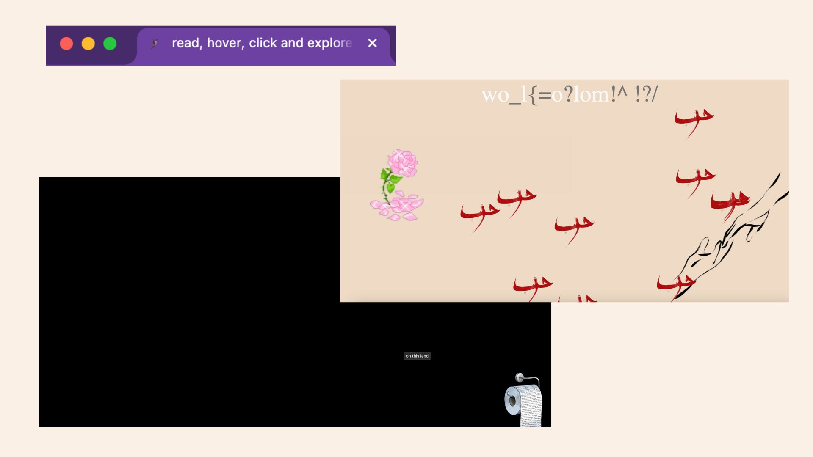

Web Art

How can a physical space—rooted in history, memory, and cultural identity—be transformed into an immersive digital experience?
حرب/حب (War/Love) is an interactive web art experience that explores this question by reimagining physical spaces as digital vessels, drawing inspiration from Mahmoud Darwish's poetry and the Mahmoud Darwish Museum to create a web-based, interactive narrative.
Rather than replicating a traditional museum or exhibition space, this project deconstructs spatial, literary, and visual elements to craft a dynamic online environment. By leveraging nonlinear storytelling, unconventional user interface structures, and interactive techniques, the web becomes a living archive, inviting users to explore memory and cultural resilience in a personal, exploratory way.
Interaction Design – Created an adaptive, immersive web experience that shifts based on user exploration, blurring the line between interface and narrative.
Prototyping & Wireframing – Developed user flows and nonlinear storytelling structures in Figma to ensure intuitive yet richly layered navigation.
Front-End Development – Implemented HTML, CSS, and JavaScript with dynamic UI elements that mirror the themes of displacement and fragmentation.
Design Principles – Emphasized accessibility, usability, and emotional resonance, ensuring the interface embodies the themes of memory, loss, and resilience.